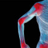

Polymyalgia Rheumatica
Rx
1.Tab Prednisolone 5mg N=100 2tab q12h
2.Tab Naproxen 250mg N=60 q8h
3.Tab Famotidine 20mg N=60 q12h
نکته1: بعد از بهبود علائم پردنیزولون برای 2-4 هفته ادامه بدید
نکته2: پردنیزولون به تدریج قطع کنید.(تیپرکنید)
نکته3: برای کاهش علائم گوارشی فاموتیدین تجویز کنید.
C Group : Naproxen, Prednisolone
B Group: Famotidine
RA (esp seronegative)1️⃣ و OA
2️⃣بورسیت یا تاندونیت
Bone disease 3️⃣:
▪️Multiple myeloma
▪️Widespread skeletal metastases
▪️Hyperparathyroidism
Drug-induced myalgias or myositis4️⃣ مثل استاتین
5️⃣ Dermatomyositis و polymiositis
Infection6️⃣:
▪️endocarditis
▪️Lyme disease
Parkinson disease7️⃣
Hypothyroidism8️⃣
Malignancy9️⃣
🔟Vasculitis مثل giant cell arteritis
Spondyloarthropathy1️⃣1️⃣
Depression1️⃣2️⃣
تصویری برای این نسخه موجود نیست.